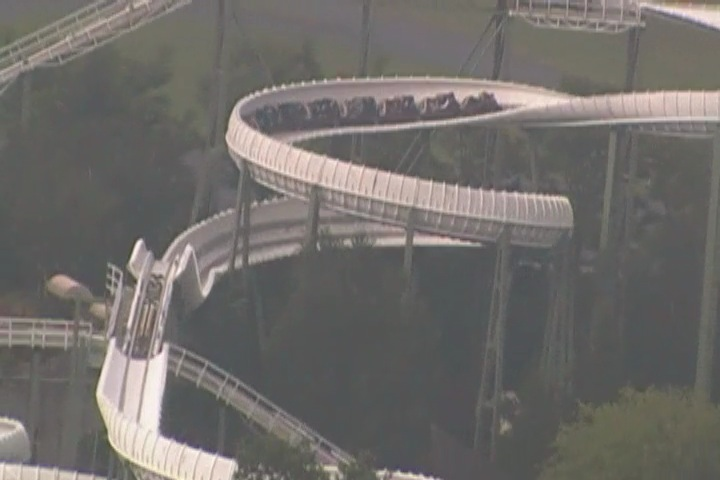

| |
Bobbahn Review

Today at Heide Park, we're here to review Bobbahn, the park's Bobsled coaster. Sadly, Bobsled coasters are starting to become a dying breed. We get in the cars, pull down the lap bar, and we're off. We go around a turn and head up the lifthill, getting a nice view of Heide Park. We reach the top, and head down a turn. We gain a little speed before we head into a downward helix. The snaking has begun. We begin to gain some speed and even...swing a little bit as we curve on down. Hey, I'm enjoying this. We then head up this small hill that really seems to take away a lot of our speed and just in case we had any leftover, the midcourse brakes will suck you dry. *Sigh* What a joy. We head into a downward helix and begin to regain our speed until we head into this S Curve, going through a left turn only to then go the opposite direction. This is particuarly fun as it allows us to get some swinging action on those turns. And I like that. We then head into another downward helix where we gain some more speed until we just see this dark hole. Oh boy. TAKE THE TUNNEL!!! Seriously, this is freaking awesome right there. And we go through another helix in the dark. And I love that. This is my favorite part of the ride as we have some swinging action in the dark and you can't see what the hell is happening over here. We then exit out and head up another hill and go through another midcourse brake. This is my problem with the Bobsled Coasters. Both the Intamin and Mack Bobselds, have way too many mid course brakes. I know its necesarry since there's no upstop wheels and it can't go too fast, but ugh. Come on. Whatever. I'm still enjoying this ride. We then head down another turn and go down another downward helix. Mmm, I'm liking this. Hope this 3rd section is a good one. And...we head into the final brake run. REALLY!!? WHAT A F*CKING COCKTEASE!!! Grr. We then go through a lot of straight track and meandering before we climb up the final lifthill. So yeah. It has the Ninja effect. Hey, at least they don't hype you up and say "THE END IS NEAR!!!" like they do on Adventure Express or trick you like on the California version of Revenge of the Mummy. So yeah. That's Bobbahn. It's a really fun Bobsled coaster and while it's not my favorite Mack Bobsled, it's certainly better than the prototype version they have at Europa Park. So yeah. I'd definetly ride Bobbahn if you're at Heide Park. It's kind of a rare ride, and it is a lot of fun. Just get here early since it's not avaliable on the Fast Pass.
6/10
Location: Heide Park
Opened: 1994
Built by: Mack
Last Ridden: June 27, 2012
Bobbahn Photos


Home
|